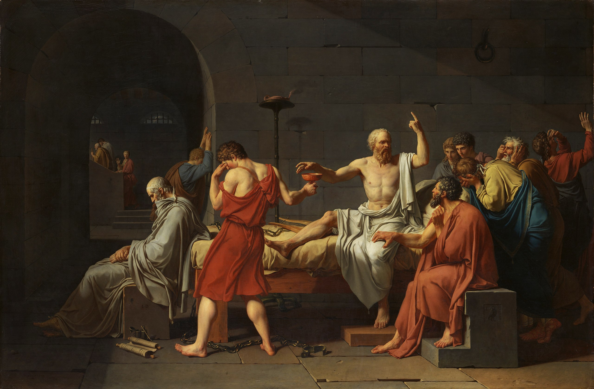

Η σωστή ερώτηση…#

Ο πίνακας Ο Θάνατος του Σωκράτη του Jacques-Louis David.#
Σωστές και λάθος ερωτήσεις, όπως λέμε συνεχώς - και καλά κάνουμε - δεν υπάρχουν. Οπότε ο παραπάνω τίτλος ίσως δεν είναι παρά ένα κακοστημένο click-bait. Ωστόσο, σε κάποιες περιστάσεις, υπάρχουν ερωτήσεις που μπορούν να προάγουν έναν διάλογο κι ερωτήσεις που έχουν πιο τετριμμένα αποτελέσματα. Με αφορμή, λοιπόν, ένα σύνηθες περιστατικό από μια τάξη, θα ασχοληθούμε με μία τέτοια ερώτηση.
Ένας κλασσικός διάλογος#
Μαθηματικά διδάσκουμε, εξισώσεις λύνουμε. Αρκετά συχνό είναι, λοιπόν, κάποια παιδιά που έχουν μία άνεση με τους νοερούς υπολογισμούς κ.λπ., να λύνουν πολλές εξισώσεις, ειδικά τις πιο απλές, «με το μάτι». Τυπικό δείγμα ενός διαλόγου μπορεί να είναι το εξής:
(Κ) Να λυθεί η εξίσωση: \(\|2x-1|=x.\)
(ΜΜΕΣΠ) Εύκολο! \(x=1\) ή \(x=\frac{1}{3}.\)
Πώς τις βρήκες;
Με το μάτι!
Στο παραπάνω, ΜΜΕΣΠ σημαίνει: «Μαθητής/τρια Με Ευχέρεια Στις Πράξεις». Με διάφορες παραλλαγές ως προς το ποια είναι η υποκείμενη εξίσωση και τα εκφραστικά μέσα που χρησιμοποιούν οι δύο συνδιαλεγόμενοι, ο παραπάνω διάλογος λαμβάνει χώρα αρκετά συχνά σε μία μαθηματική τάξη. Ωστόσο, η αλήθεια είναι ότι, ενώ έχω κάνει πολλές φορές την ερώτηση «πώς τις βρήκες» - ή κάποια αναλόγου περιεχομένου και νοήματος - τελικά μπορώ να πω ότι είναι ίσως μία άχρηστη ερώτηση.
Άχρηστη, διότι δεν προάγει τον διάλογο και άρα σκοτώνει μία ευκαιρία να αποκαλυφθεί ένα ακόμα λεπτό σημείο των μαθηματικών - που αφορά άμεσα τα παιδιά και είναι του επιπέδου τους. Σαφώς, αν ένα παιδί με το που δει μία εξίσωση βρει τις λύσεις της, θα το έχει κάνει με το μάτι, οπότε, το να ρωτήσουμε (μόνο) το παραπάνω είναι περιττό. Μία ίσως καλύτερη ερώτηση είναι η εξής:
Και πού ξέρεις ότι δεν υπάρχουν κι άλλες λύσεις;
Σαφώς, η παραπάνω ερώτηση μπορεί να ακολουθήσει ακριβώς μετά την απάντηση «με το μάτι», δεν έχει και πολλή σημασία. Αυτό που έχει σημασία είναι ότι με τον παραπάνω τρόπο μπορούμε να βρούμε μία ευκαιρία να αναδείξουμε τη σημασία της \(\Leftrightarrow\) κατά την επίλυση εξισώσεων, την έννοια της επαλήθευσης και, γενικά, τη λογική - με τη μαθηματική έννοια - πίσω από την επίλυση ακόμα και απλών εξισώσεων. Αν, δε, η τύχη μας χαμογελάσει, μπορεί να βρεθούμε ακόμα-ακόμα να συζητάμε για το τι συνιστά απόδειξη για τα μαθηματικά. Αλλά, ας τα δούμε ένα-ένα τα πράγματα…
Πώς λύνουμε εξισώσεις;#
Αρχικά, ας θεωρήσουμε μία εξίσωση, δηλαδή μία έκφραση της μορφής:
για κάποιες συναρτήσεις \(f,g.\) Το να λύσουμε την παραπάνω εξίσωση συνίσταται στο να προσδιορίσουμε ένα σύνολο \(A\subseteq D_f\cap D_g\) που να ικανοποιεί την παρακάτω ισοδυναμία:
Αυτό το σύνολο πολλές φορές το συμβολίζουμε και με \(h^{-1}(\{0\}),\) όπου \(h=f-g\) και για κάποιες οικογένειες συναρτήσεων το λέμε και πυρήνα τους, αλλά όλα αυτά, προς το παρόν δε θα μας απασχολήσουν. Αυτό που έχει ζουμί εδώ είναι η έννοια της λογικής ισοδυναμίας. Αυτό που κάνουμε σε κάθε εξίσωση είναι, ξεκινώντας από την αρχική έκφραση της εξίσωσης, να εφαρμόζουμε μία σειρά από «αλγεβρικούς μετασχηματισμούς» και, τελικά, να καταφέρνουμε να βρούμε ποια ακριβώς είναι τα στοιχεία του συνόλου \(A.\) Ας προσπαθήσουμε να δώσουμε μία εσάνς φορμαλισμού στα παραπάνω.
Γλώσσες και Εκφράσεις#
Θα αντιμετωπίσουμε το πρόβλημα από μία όχι αμιγώς αλγεβρική σκοπιά, καθώς θα προσπαθήσουμε να μελετήσουμε τις εξισώσεις ως συντακτικά αντικείμενα. Ας πάρουμε μία εξίσωση, για παράδειγμα την εξίσωση:
Όπως η παραπάνω, κάθε εξίσωση που μας ενδιαφέρει έχει τη μορφή:
όπου, μπορεί κανείς να πει, τα \(f,g\) είναι συναρτήσεις ορισμένες σε κάποιο υποσύνολο του \(\mathbb{R},\) όπως είπαμε παραπάνω. Ωστόσο, μπορούμε να σκεφτούμε τα \(f,g\) και ως εκφράσεις, δηλαδή ως απλές οντότητες της γλώσσας των μαθηματικών. Γνωρίζουμε ότι στα μαθηματικά αξιοποιούμε κάποια συγκεκριμένα σύμβολα για να γράψουμε τις εκφράσεις μας, όπως κάποια γράμματα, κάποια ψηφία, κάποια σύμβολα πράξεων κ.λπ. Επίσης, αυτά τα σύμβολα δεν τα βάζουμε με όποια σειρά θέλουμε, αλλά έχουμε συγκεκριμένους κανόνες, τους οποίους ξέρουμε καλά από το σχολείο. Δε θα αναλωθούμε εδώ στο να απαριθμήσουμε όλα τα παραπάνω, αλλά θα αρκεστούμε στο ότι είναι πράγματι εφικτό να τα απαριθμήσει κανείς - και, μάλιστα, με λίγες «έξυπνες» επιλογές, είναι εφικτό όλα τα σύμβολα και οι κανόνες μας να είναι πεπερασμένοι στο πλήθος.
Τώρα, όπως ξέρουμε από τη σχολική εμπειρία μας, είναι σύνηθες δύο διαφορετικές εκφράσεις να αντιστοιχούν στο ίδιο μαθηματικό αντικείμενο - εδώ, στην ίδια συνάρτηση. Για παράδειγμα:
\(x+1=(x+1),\)
\(x+3=x+5-2,\)
\(4x=\frac{8x}{2}.\)
Από συντακτική σκοπιάς, ωστόσο, όλες οι παραπάνω εκφράσεις είναι διαφορετικές μέχρι αποδείξεως του εναντίου. Όλα αυτά θυμίζουν κάπως το πώς μιλάμε. Μπορεί κανείς να αποδώσει το ίδιο νόημα με αρκετές διαφορετικές εκφράσεις, ακριβώς όπως μπορεί κανείς να παρουσιάσει το ίδιο μαθηματικό αντικείμενο με αρκετούς διαφορετικούς τρόπους.
Οι εκφράσεις που μας ενδιαφέρουν εμάς είναι εκείνες οι εκφράσεις που αντιστοιχούν σε συναρτήσεις, συνεπώς, θα δώσουμε στο σύνολο αυτών των εκφράσεων ένα ιδιαίτερο όνομα, ας πούμε \(\mathcal{E}.\) Έτσι, όλες οι εκφράσεις που παρουσιάστηκαν παραπάνω είναι κάποια στοιχεία του \(\mathcal{E}.\) Θα συμβολίζουμε επίσης με \(\mathcal{F}\) το σύνολο όλων των πραγματικών συναρτήσεων και με \(t\) τη συνάρτηση \(t:\mathcal{E}\to\mathcal{F}\) που παίρνει μία έκφραση από το \(\mathcal{E}\) και μας δίνει τη συνάρτηση (ως μαθηματικό αντικείμενο) που αντιστοιχεί σε αυτήν την έκφραση.
Εδώ μπορεί κανείς άφοβα, ελεύθερα και δίκαια να γκρινιάξει και να πει, «Ε, και πού θα ξέρω εγώ αν το \(x+1\) αναφέρεται σε μία συνάρτηση ή σε μία έκφραση;» Με το δίκιο του και καλά θα κάνει. Για να μπορούμε να διακρίνουμε - για λόγους παρουσίασης - τις εκφράσεις από τις συναρτήσεις ως αντικείμενα, όταν αυτό δεν είναι σαφές από το συγκείμενο, θα γράφουμε τις εκφράσεις μας εντός «αυτακίων». Έτσι, το \(x+1\) αναφέρεται στη συνάρτηση \(x+1\) ενώ το \(\``x+1"\) στην αντίστοιχη έκφραση. Προσοχή! Τα «αυτάκια» δεν τα θεωρούμε στοιχεία της μαθηματικής μας γλώσσας, αλλά τα χρησιμοποιούμε ως ένα εξωμαθηματικό μέσο για να ξεχωρίσουμε τις συναρτήσεις ως αντικείμενα με τις αντίστοιχες συντακτικές εκφράσεις των συναρτήσεων.
Έτσι, για παράδειγμα, χρησιμοποιώντας τη συνάρτηση \(t\) που ορίσαμε παραπάνω, μπορούμε να πούμε τα παρακάτω:
\(t(``x")=x,\)
\(t(``x+2-2")=x.\)
Με ανάλογο σκεπτικό, μπορεί κανείς να γράψει διάφορες ισότητες ανάμεσα σε εκφράσεις και τις αντίστοιχες συναρτήσεις που «εκφράζουν».
Ισοδύναμες Εκφράσεις#
Τώρα, όλη η παραπάνω συζήτηση μας καλεί να ορίσουμε μία σχέση ισοδυναμίας - δυνάμει ταύτισης, δηλαδή - ανάμεσα στις εκφράσεις του συνόλου \(\mathcal{E}.\) Ορίζουμε τη σχέση \(\sim\) μεταξύ δύο στοιχείων του \(\mathcal{E}\) με τον ακόλουθο τρόπο. Οι εκφράσεις \(x,y\) σχετίζονται μέσα από τη σχέση \(\sim\) αν και μόνο αν ισχύει ότι \(t(x)=t(y).\) Με άλλα λόγια:
Είναι εύκολο να δούμε ότι η παραπάνω σχέση ικανοποιεί τις εξής ιδιότητες:
\(x\sim x\)
\(x\sim y\Rightarrow y\sim x\)
\(x\sim y\) και \(y\sim z\) τότε \(x\sim z.\)
Επομένως, η παραπάνω σχέση είναι πράγματι μία σχέση ισοδυναμίας. Θεωρούμε τώρα και τις αντίστοιχες κλάσεις ισοδυναμίας. Για μία έκφραση \(x\in\mathcal{E}\) θεωρούμε το σύνολο:
που περιέχει όλες τις εκφράσεις που είναι ισοδύναμες με την \(x,\) δηλαδή εκφράζουν την ίδια συνάρτηση.
Το σύνολο των παραπάνω κλάσεων, \(\mathcal{E}/\sim,\) μπορούμε, φυσιολογικά, να το ταυτίσουμε με το σύνολο \(\mathcal{F}\) των πραγματικών συναρτήσεων καθώς, για κάθε μία κλάση υπάρχει ακριβώς μία συνάρτηση που να εκφράζεται μέσα από τα στοιχεία της. Έτσι, η σχέση \(\sim\) «βάζει τάξη» στην αταξία του συνόλου \(\mathcal{E}.\)
Τελεστές#
Έχοντας μιλήσει για εκφράσεις κι έχοντας τακτοποιήσει τις εκφράσεις για τις οποίες μιλήσαμε, ήρθε η ώρα να αγγίξουμε, διακριτικά, το ζήτημα από το οποίο ξεκινήσαμε: πώς λύνουμε εξισώσεις;
Έχοντας στο μυαλό μας ότι όλα όσα κάνουμε έχουν να κάνουν με εκφράσεις που περιγράφουν συνήθως τα ίδια πράγματα με άλλα λόγια, αυτό που κάνουμε κατά τη διαδικασία επίλυσης μίας εξίσωσης είναι να επεξεργαζόμαστε διαρκώς τις εκφράσεις των δύο μελών της εξίσωσης με στόχο να καταλήξουμε σε μία έκφραση της μορφής:
Αυτή η επεξεργασία μπορεί να έχει δύο μορφές:
Αφενός, μπορεί απλώς να ξαναγράψουμε ένα μέλος μίας εξίσωσης είτε με τον ίδιο είτε με έναν άλλο τρόπο, όπως όταν αναπτύσσουμε μία ταυτότητα.
Αφετέρου, μπορεί να μετασχηματίσουμε και τα δύο μέλη μίας εξίσωσης, παίρνοντας μία νέα εξίσωση, όπως όταν προσθέτουμε έναν αριθμό και στα δύο μέλη μίας εξίσωσης.
Οι δύο κατηγορίες μετασχηματισμών που περιγράφουμε παραπάνω έχουν κάποιες ουσιαστικές διαφορές, καθώς οι μεν πρώτοι «σέβονται» τη σχέση της ισοδυναμίας εκφράσεων που ορίσαμε παραπάνω, ενώ οι δεύτεροι αγνοούν το περιεχόμενο μίας έκφρασης και «σέβονται» απλά την ισότητα των δύο εκφράσεων. Όπως κι αν έχει, και οι δύο κατηγορίες μετασχηματισμών σέβονται, τουλάχιστον, την ισότητα των δύο μελών.
Για να αποδώσουμε το παραπάνω κάπως πιο φορμαλιστικά, μπορούμε κάθε τέτοιο μετασχηματισμό να τον δούμε ως έναν τελεστή που παίρνει ένα ζευγάρι εκφράσεων και δίνει δύο άλλες εκφράσεις έτσι ώστε, αν οι αρχικές εκφράσεις αντιστοιχούν σε δύο ίσες συναρτήσεις, το ίδιο να κάνουν και οι τελικές. Με άλλα λόγια, θεωρούμε το σύνολο των τελεστών \(\mathcal{T}\) πάνω στις εκφράσεις του \(\mathcal{E}\) έτσι ώστε αν \(T\in\mathcal{T}\) να ισχύει:
Επομένως, η επίλυση μίας εξίσωσης ανάγεται στην εξεύρεση των κατάλληλων τελεστών \(T_1,T_2,\ldots,T_n\) έτσι ώστε, αν έχουμε μία εξίσωση \(\phi=\psi\) με \(\phi,\psi\in\mathcal{E},\) να κάνουμε το εξής:
Και, μετά, από την τελευταία ισότητα, εύκολα να μεταβούμε σε μία ισοδύναμη έκφραση της μορφής \(x\in A.\) Ή, αν θέλουμε να είμαστε κάπως λακωνικότεροι, θωρούμε τον τελεστή:
οπότε η λύση της εξίσωσης ανάγεται στο να βρούμε τον «μαγικό» τελεστή \(\hat{T}\) έτσι ώστε:
Παρατηρήστε, παραπάνω, ότι η εφαρμογή κάθε τελεστή συνοδεύεται από μία ισοδυναμία. Συνεπώς, δε μας απασχολούν απλώς οι τελεστές που από ισοδύναμες εκφράσεις μας «στέλνουν» σε ισοδύναμες εκφράσεις, αλλά που μπορούν να μας «γυρίσουν πίσω». Με άλλα λόγια, θέλουμε, τρόπον τινά, οι τελεστές που εφαρμόζουμε στα μέλη μίας εξίσωσης να είναι αντιστρέψιμοι.
Ωστόσο, η ζωή συχνά είναι σκληρή και σε κάποιο σημείο αναγκαζόμαστε να «σπάσουμε» αυτήν την ακολουθία λογικά ισοδύναμων ισοτήτων, εισάγοντας κάποιον μη αντιστρεπτό τελεστή - π.χ. υψώνοντας στο τετράγωνο ποσότητες που δεν ξέρουμε το πρόσημό τους. Σε αυτήν την περίπτωση, καταλήγουμε να αποδεικνύουμε την ακόλουθη συνεπαγωγή:
Δηλαδή, έχουμε εντοπίσει ένα σύνολο στο οποίο αναγκαία βρίσκονται οι λύσεις της αρχικής μας εξίσωσης, ωστόσο δεν έχουμε εξακριβώσει ποια από τα στοιχεία του \(A^*\supseteq A\) είναι πράγματι λύσεις της. Έτσι, αν αυτά είναι λίγα, μπορούμε απλώς να επαληθεύσουμε τα όσα βρήκαμε, ενώ αν, π.χ. είναι άπειρα στο πλήθος, πρέπει να καταφύγουμε σε άλλα τεχνάσματα για να βεβαιωθούμε για το ποια από αυτά είναι πράγματι λύσεις της αρχικής εξίσωσης.
Με ή χωρίς ισοδυναμίες, ωστόσο, τίποτα από τα παραπάνω δεν αποδίδει αυστηρά αυτό που «μαπκάλικα» λέμε λύση «με το μάτι»…
Με το μάτι…#
Όταν βρίσκουμε «με το μάτι» μια λύση μίας εξίσωσης - ή και περισσότερες - τότε αυτό που κάνουμε είναι, ουσιαστικά, να προσδιορίζουμε ένα σύνολο \(B\subseteq A\) που περιέχεται στο πραγματικό σύνολο λύσεων της αρχικής εξίσωσης. Έτσι, διατυπώνουμε στην ουσία, την ακόλουθη συνεπαγωγή:
Με άλλα λόγια, με το να λύνουμε μία εξίσωση «με το μάτι» διατυπώνουμε μία ικανή συνθήκη για να είναι ένας αριθμός λύση της. Ωστόσο, το ότι είναι ικανή δε σημαίνει ότι είναι και η μόνη που μπορεί να το επιτύχει αυτό. Γενικά, αυτό είναι το ζήτημα με τις ικανές συνθήκες. Ενώ δίνουν άμεσα μία λύση στο πρόβλημά μας, είναι ιδιαίτερα «φειδωλές» ως προς αυτά που μοιράζονται μαζί μας. Δε μας λένε τίποτα παραπάνω για άλλες περιπτώσεις που ίσως να μπορούν κι αυτές να δώσουν λύση στο πρόβλημά μας, σε αντίθεση με τις πιο «φλύαρες» αναγκαίες συνθήκες που καθορίζουν ένα συνήθως ευρύτερο σύνολο από αυτό που μας ενδιαφέρει. Έτσι, ενώ με μία αναγκαία συνθήκη χρειάζεται να «κοσκινίσουμε» τα αποτελέσματα που παίρνουμε έτσι ώστε να μας μείνουν μόνο οι λύσεις της εξίσωσης, με μία ικανή συνθήκη στα χέρια μας, έχουμε όλη τη δουλειά μπροστά μας, καθώς πρέπει να εξακριβώσουμε ότι δεν υπάρχουν κι άλλες λύσεις ή, αν υπάρχουν κι άλλες, ποιες είναι αυτές.
Ακριβώς αυτή η διαφορά μπορεί να αποτελέσει και το έναυσμα για ενδιαφέροντες διαλόγους στην τάξη σε σχέση με το πώς λύνουμε εξισώσεις. Η ερώτηση «Και πώς ξέρουμε ότι δεν υπάρχουν άλλες λύσεις από αυτές που βρήκαμε με το μάτι;» μπορεί να δώσει διαφορετικές τροπές στη συζήτηση. Αφενός, μπορεί να καταλήξουμε να συζητάμε για το πώς διαφέρουν οι ικανές από τις αναγκαίες συνθήκες, όπως παραπάνω, και το πώς πρέπει, αν μας απασχολεί να δώσουμε μία πλήρη λύση στο πρόβλημά μας, να εξασφαλίσουμε και τη «μοναδικότητα» των λύσεών μας - και όχι μόνο την ύπαρξή τους. Αφετέρου, μπορεί πολύ εύκολα να μας οδηγήσει σε ένα άλλο ενδιαφέρον μονοπάτι που αφορά το πώς αποδεικνύουμε πράγματα στα μαθηματικά. Για παράδειγμα, ο αρχικός μας διάλογος μπορεί να συνεχιστεί κάπως έτσι:
(Κ) Και πώς ξέρουμε ότι δεν υπάρχουν άλλες λύσεις από αυτές που βρήκαμε με το μάτι;
(ΜΜΕΣΠ) Ε, εντάξει, δοκίμασα κι άλλους αριθμούς και δεν βγαίνει η εξίσωση.
Το παραπάνω μπορεί να ερμηνευθεί σαν μία απόπειρα απόδειξης της ακόλουθης συνεπαγωγής:
όπου \(B\) είναι το σύνολο των λύσεων που έχουν εντοπιστεί «με το μάτι». Αυτό δεν είναι παρά το αντιθετοαντίστροφο της:
που είναι και η συνεπαγωγή που μας λείπει έτσι ώστε από τη συνεπαγωγή:
να περάσουμε στην ισοδυναμία:
και άρα να έχουμε αποδείξει πράγματι ότι το σύνολο λύσεων της εξίσωσής μας είναι το \(B.\) Με αφορμή αυτό, μπορούμε να σταθούμε στο πώς, αν και η πρόθεση του ΜΜΕΣΠ είναι καθόλα σωστή - καθώς προσπαθεί να αποδείξει και το αντίστροφο από αυτό που έχει ήδη αποδείξει - στα μαθηματικά, δεν μπορούμε να εργαζόμαστε δειγματοληπτικά. Ή, για την ακρίβεια, μπορούμε, απλά όχι τόσο απλά. Για παράδειγμα, ας πάρουμε αυτήν την πολύ απλή εξίσωση:
«Με το μάτι» βλέπουμε ότι το \(x=-\frac{1}{2}\) είναι ρίζα της. Τώρα, πώς μπορούμε να επιβεβαιώσουμε ότι, για παράδειγμα, το \(4\) δεν είναι ρίζα της; Σαφώς, κάνοντας έναν πολλαπλασιασμό και μία πρόσθεση και παρατηρώντας ότι \(9>0.\) Για την ακρίβεια, οι πράξεις που κάναμε παραπάνω είναι οι εξής:
Στα παραπάνω, δεν αξιοποιούμε την ιδιαίτερη φύση που έχει το 4 ως πραγματικός αριθμός σε όλο της το «μεγαλείο», υπό την έννοια ότι το μόνο που μας χρειάζεται, πρακτικά, είναι το γεγονός ότι \(4>-\frac{1}{2}.\) Πράγματι, αν στη θέση του 4 τοποθετήσουμε στα παραπάνω έναν οποιονδήποτε αριθμό \(x>-\frac{1}{2},\) όλα μπορούν να δουλέψουν αρκετά καλά, καθώς, αν τον πολλαπλασιάσουμε επί δύο και προσθέσουμε 1 θα πάρουμε έναν θετικό αριθμό και, άρα, ο \(x\) δεν είναι λύση της αρχικής μας εξίσωσης. Αναλόγως, μπορούμε να εργαστούμε και για αριθμούς μικρότερους του \(-\frac{1}{2}.\)
Παραπάνω, δεν κάναμε τίποτα περισσότερο από αυτό που κάνουμε πάντα στα μαθηματικά. Αρχικά, πήραμε μία ειδική περίπτωση ενός αριθμού που δεν είναι ρίζα της εξίσωσής μας και αποδείξαμε ότι πράγματι, δεν είναι. Έπειτα, παρατηρήσαμε ότι από όλο το εννοιολογικό φορτίο που κουβαλά για τα μαθηματικά το σύμβολο «4», εμείς δεν αξιοποιήσαμε παρά μία πολύ ταπεινή του ιδιότητα: ότι \(4>-\frac{1}{2}.\) Έτσι, γενικεύσαμε αρκετά εύκολα το σκεπτικό μας για κάθε αριθμό \(x>-\frac{1}{2}\) κι έπειτα, αναλόγως, για \(x<-\frac{1}{2}.\)
Αυτό που κάναμε παραπάνω είναι να πάρουμε μία τυπικά «λάθος» σκέψη και να την φέρουμε στη «σωστή» της μορφή στα μαθηματικά. Οι λέξεις «σωστή» και «λάθος», είναι σαφώς σε εισαγωγικά, γιατί καθόλου λάθος δεν είναι το να σκεφτόμαστε ένα πρόβλημα σε ειδικές περιπτώσεις του, πρώτα. Απλώς, στα μαθηματικά συνηθίζουμε να μη μένουμε σε αυτές αλλά να περνάμε σε πιο αφηρημένα χωράφια - κι αυτό είναι ίσως από τα πιο ενδιαφέροντα πράγματα που καλούμαστε να διδάξουμε σε μία τάξη μαθηματικών. Το πώς μπορούμε να πάρουμε περιορισμένης εμβέλειας φαινόμενα και, κάνοντας τις κατάλληλες αφαιρέσεις, να γενικεύσουμε.
Επίλογος#
Τέτοιες μικρές και συνηθισμένες σκηνές σε μία τάξη, όπως το να λύσουμε μία εξίσωση «με το μάτι», είναι συχνά το πιο πρόσφορο έδαφος για να ανοίξουμε συζητήσεις για λεπτά - ή και όχι τόσο λεπτά - ζητήματα των μαθηματικών. Ακριβώς επειδή αποτελούν συνήθεις πρακτικές, το να αποκαλυφθεί το πόσο βάθος υπάρχει από πίσω τους αποτελεί συχνά έκπληξη - όπως όταν κανείς «ξεσκεπάζει» πολύπλοκους ψυχολογικούς μηχανισμούς που διέπουν απλές και καθημερινές συνήθειες - και οδηγεί σε ενδιαφέρουσες συζητήσεις, Συζητήσεις που, προφανώς, δεν μπορεί κανείς να προβλέψει, καθώς κάθε τάξη είναι ουσιωδώς μοναδική, αλλά που μπορεί να σπρώξει προς συγκεκριμένες κατευθύνσεις, όπως παραπάνω.
Μέχρι την επόμενη φορά, καλή συνέχεια!